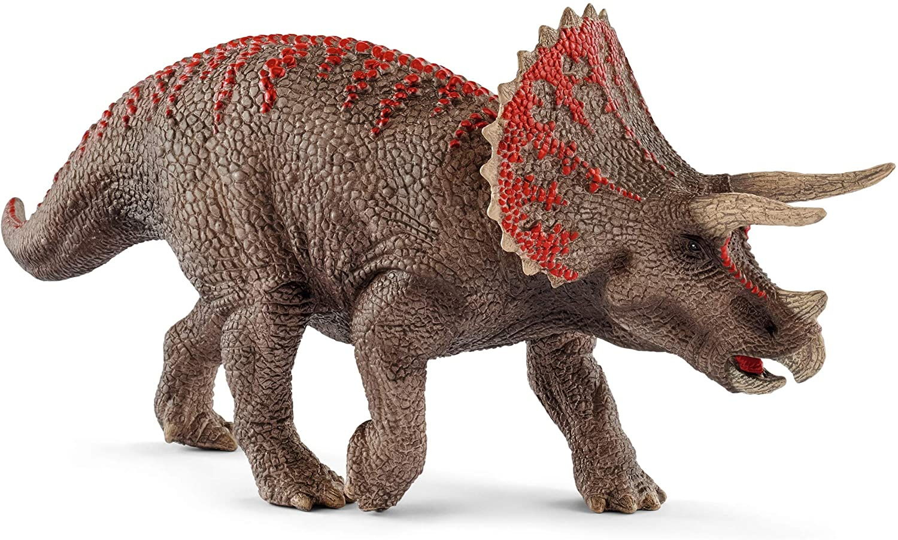
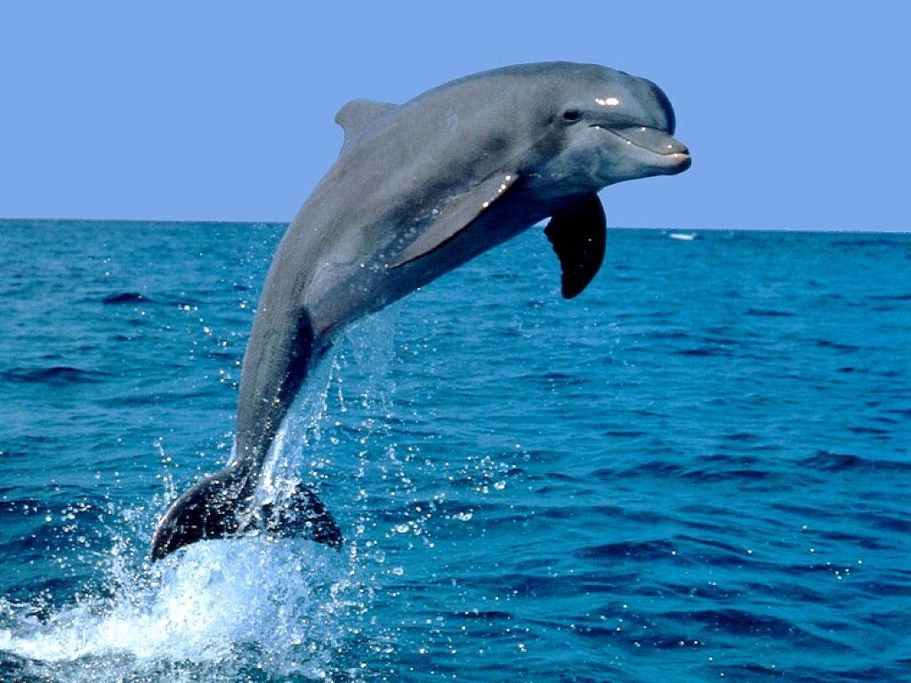

Esta es la imagen de un perro que se hizo muy popular en las zonas de montañas nevadas debido a su pelaje blanco.

Esta es una imagen de un triceratops, un dinosario que vivio hace muchos años que tenia una gran estructura
osea.
Esta es la imagen de un perro que se hizo muy popular en las zonas de montañas nevadas debido
a su pelaje blanco.

Esta es una imagen de un delfin, una especie mamifera que vive en el mar.